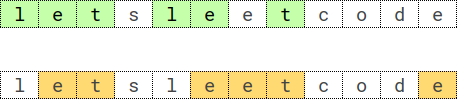

| Category | Difficulty | Likes | Dislikes |
|---|---|---|---|
| Algorithms | Hard | 820 | 116 |
string | backtracking | greedy | counting | enumeration
google | facebook
You are given a string s of length n, and an integer k. You are tasked to find the longest subsequence repeated k times in string s.
A subsequence is a string that can be derived from another string by deleting some or no characters without changing the order of the remaining characters.
A subsequence seq is repeated k times in the string s if seq * k is a subsequence of s, where seq * k represents a string constructed by concatenating seq k times.
"bba" is repeated 2 times in the string "bababcba", because the string "bbabba", constructed by concatenating "bba" 2 times, is a subsequence of the string "bababcba".Return the longest subsequence repeated k times in string s. If multiple such subsequences are found, return the lexicographically largest one. If there is no such subsequence, return an empty string.
Example 1:

Input: s = "letsleetcode", k = 2
Output: "let"
Explanation: There are two longest subsequences repeated 2 times: "let" and "ete".
"let" is the lexicographically largest one.Example 2:
Input: s = "bb", k = 2
Output: "b"
Explanation: The longest subsequence repeated 2 times is "b".Example 3:
Input: s = "ab", k = 2
Output: ""
Explanation: There is no subsequence repeated 2 times. Empty string is returned.
Constraints:
n == s.length2 <= k <= 20002 <= n < min(2001, k * 8)s consists of lowercase English letters.